| 1. Bittu Mandal | MIS 112415048 |
| 2. Chinmay Ghule | MIS 112415054 |
| 3. Dev Krishan | MIS 112415057 |
| 4. Himanshu Raj | MIS 112415082 |
| 1. Abstract |
| 2. Introduction |
| 3. Identification of User Groups |
| 4. User Survey and Questionnaire |
| 5. User Persona Development |
| 6. Literature Review |
| 7. Research Gaps |
| 8. Requirements |
| 9. System Architecture |
| 10. Dataset and Model Training |
| 11. Use Cases |
| 12. Wireframes and Interaction Design |
| 13. Working Prototype |
| 14. Research Poster |
| 15. Testing and Results |
| 16. Conclusion and Future Scope |
| 17. References |
| Abbreviation | Meaning |
|---|---|
| HCI | Human–Computer Interaction |
| ISL | Indian Sign Language |
| ML | Machine learning |
| MLP | Multilayer perceptron (feed-forward neural network) |
| RBF / SVM | Radial basis function / Support vector machine |
| kNN | k-nearest neighbours |
| WASM | WebAssembly |
| UI | User interface |
SignBridge is a web application that recognises static Indian Sign Language (ISL) signs from a webcam and shows the meaning as large text and speech. It covers the 35 static fingerspelling signs A–Z and 1–9. Each video frame goes through MediaPipe Hand Landmarker, which finds up to two hands and 21 key points per hand. The points are normalised into an 85-value feature vector and classified by a small multilayer perceptron (85-128-64-35). The model was trained with scikit-learn on a public dataset of 42,745 ISL images. The 358 duplicated files were removed, and landmarks were found in 98.79% of the remaining images. On a held-out test set of 8,377 images the MLP reached 97.86% accuracy (macro-F1 97.42%). The split was designed so that near-duplicate video frames cannot appear in both training and test data. Inference runs fully in the browser, so camera frames never leave the user's device.
The interface was designed through a user-centred process: identification of user groups, a ten-question survey of 10 respondents, personas, a literature review and research-gap analysis, then low-fidelity wireframes and a working prototype. All eight of Shneiderman's Golden Rules are applied and documented. Examples are keyboard shortcuts, live feedback with a hand skeleton and confidence bar, a confidence threshold that shows an "uncertain" state instead of a wrong answer, and Undo for every saving or deleting action.
Keywords: Indian Sign Language, sign language recognition, MediaPipe, hand landmarks, multilayer perceptron, on-device inference, accessibility, human-computer interaction, Shneiderman's golden rules, wireframes.
The purpose of the system is to help a person who signs ISL and a person who does not know ISL communicate short, exact information such as names, spellings, numbers and codes. The camera recognises fingerspelled letters and numbers and shows them as text and speech. The same tool helps learners practise ISL fingerspelling against reference photos.
The system recognises the 35 static ISL signs A–Z and 1–9 from a live webcam, one sign at a time. It includes the dataset preparation and model-training pipeline, the in-browser recognition pipeline, result confirmation and correction, history, a reference vocabulary and accessibility settings. It does not translate sentences or recognise word signs that need movement or facial expression. It is not a certified interpreter.
Deaf and hard-of-hearing people who use ISL often meet hearing people who do not know any ISL, such as shopkeepers, office staff and classmates. Without an interpreter, exact information like a name, a phone number or a room number is slow to pass on and easy to get wrong. Existing research systems report recognition accuracy but rarely ask how the result should be shown to users, or what should happen when the system is wrong.
How can a camera-based ISL recogniser present its output so that both signers and non-signers can trust it, notice when it is unsure, and correct it quickly?
ISL is the main language of many Deaf people in India, while very few hearing people know it. Fingerspelling is used for names, places, numbers and words that have no sign. These are exactly the items that are hardest to guess from gestures or lip reading. A phone or laptop camera is now available almost everywhere, so a tool that turns fingerspelling into text could be used at a shop counter, in a classroom or at home.
| User group | Who they are | Characteristics | Needs | Context of use |
|---|---|---|---|---|
| ISL users (primary) | Deaf or hard-of-hearing people who sign ISL | Fluent in ISL; varying reading skill in English; experienced with phones; used to being misunderstood | Be understood quickly when spelling names or numbers; see that the system read the sign correctly; not depend on another person | Shops, offices, hospitals, college; mostly phone or laptop; often in a hurry |
| Hearing communication partners (primary) | Family members, classmates, teachers, shop and office staff | Know no ISL or only a few signs; no technical background | A large, clear text (and spoken) answer; know when the answer may be wrong; very few steps | Counter or desk, laptop or shared screen; short interactions |
| ISL learners (secondary) | Students and trainees learning fingerspelling | Motivated, comfortable with apps; unsure about hand shapes | Practise one sign at a time against a reference; immediate feedback on whether it matched | At home or in class on a laptop |
| Technical evaluators (secondary) | CS students, developers, instructors | Comfortable with ML concepts | See confidence, alternatives and how the model works; reproduce the results | Laptop at a desk |
The system is not intended for legal, medical or emergency communication, where a qualified interpreter is required.
A ten-question questionnaire was prepared as a Google Form ("User Survey on SignBridge: Indian Sign Language Detection") and completed in person, on a phone, by 10 respondents on 25 October 2026 (Section 4.5). Every respondent answered the same questions (Section 4.2), so answers can be counted and compared. Each response is kept with its ID (R01–R10) in docs/interviews.md and the raw export in docs/survey_responses.csv. The answers were grouped into eight findings (Section 4.4), and each finding was linked to a design decision in the prototype.
| No. | Question | Response options | What it tells us |
|---|---|---|---|
| Q1 | Which category best describes you? | Deaf or hard of hearing; ISL user or learner; Hearing person who does not know ISL | User group |
| Q2 | How familiar are you with Indian Sign Language (ISL)? | Very familiar; Somewhat familiar; Know a few signs; Have heard of it but know no signs; Not familiar at all | Expertise |
| Q3 | How often do you interact with people who use sign language? | Daily; Monthly; Rarely; … | Relevance, context |
| Q4 | How difficult do you think communication can be between an ISL user and someone who does not know ISL? | Not difficult … Extremely difficult | Problem relevance |
| Q5 | Have you ever used a sign language recognition or translation application? | Yes, regularly; I have tried a similar tool; No, but I know about them; No, never | Current practice |
| Q6 | How useful would a system that recognises ISL signs through a camera and displays the corresponding words be? | 1 (not useful) – 5 (very useful) | Perceived value |
| Q7 | Which output would be most useful to you? | Text on screen; Text-to-speech audio; Both text and speech; Visual sign demonstration | Output and feedback needs |
| Q8 | Which feature would be most important in such an application? | High recognition accuracy; Real-time results; Simple and accessible interface; Ability to correct wrong predictions; Privacy and camera control | Priorities |
| Q9 | What should the application do when it is unsure about a sign? | Show a message that the sign is uncertain; Ask the user to repeat the sign; Offer possible alternative words; Allow the user to type the intended message | Error handling, trust |
| Q10 | How likely would you be to use or recommend such a system if it worked reliably? | Very likely; Likely; Not sure; Unlikely; … | Adoption |
| Group (Q1) | Count | IDs |
|---|---|---|
| Hearing person who does not know ISL | 5 | R01, R03, R05, R07, R10 |
| ISL user or learner | 3 | R02, R04, R06 |
| Deaf or hard of hearing | 2 | R08, R09 |
Familiarity with ISL (Q2): very familiar 1, somewhat familiar 1, know a few signs 2, heard of it but know no signs 2, not familiar at all 4. Contact with signers (Q3): daily 1, monthly 5, rarely 4. Some self-descriptions do not match the familiarity answer (for example, two "ISL user or learner" respondents and one "Deaf or hard of hearing" respondent report knowing no signs), so the group labels are treated as indicative only (Section 16).
| No. | Finding | What respondents said (count of 10) | How the prototype responds |
|---|---|---|---|
| F1 | The problem is real | Q4: 8 rated communication very (4) or extremely (4) difficult; 1 slightly, 1 not difficult. Q3: 6 meet signers monthly or daily. | Core task T1: recognise a sign and show it to the hearing partner in one step. |
| F2 | Text and speech together | Q7: both text and speech 5, speech only 2, text only 2, visual sign demonstration 1. So 7 want speech and 7 want text. | Large text result plus a Speak button (S); reference photo of the sign for the one who wanted a visual. |
| F3 | Correcting mistakes matters most | Q8: ability to correct wrong predictions was the most chosen feature (3). | Incorrect (X) with the intended sign, Try again (R), Undo (U) on every save or delete. |
| F4 | Simple, fast and private | Q8: simple and accessible interface 2, real-time results 2, privacy and camera control 2, high accuracy 1. | One main action per screen, live feedback about 12 times a second, camera only on request, all processing on the device. |
| F5 | Never guess silently when unsure | Q9: ask to repeat 4, let me type the message 3, show an "uncertain" message 2, offer alternatives 1. Nobody chose a silent best guess. | Below 60% confidence: uncertain state with Try again, closest guesses and a box to type the message and speak it. |
| F6 | Most have never used such a tool | Q5: 6 have never used one (2 never heard of them, 4 know of them); 3 tried a similar tool; 1 uses one regularly. | Guided first screen, hints and key labels on buttons, How It Works page, Demo mode without a camera. |
| F7 | Value must be earned by reliability | Q6: mean usefulness 3.0 / 5 (only 3 gave 4 or 5). Q10: 5 likely or very likely to use it if reliable, 4 not sure, 1 unlikely. | Honest scope banner, tested accuracy shown in the app, confidence on every result, uncertain state instead of wrong answers. |
| F8 | The experienced signer cares about accuracy | R09 (Deaf, very familiar with ISL, daily contact, uses apps regularly) rated usefulness 1, chose high accuracy and an "uncertain" message, yet would be very likely to use a reliable system. | Confidence threshold, 9-of-12 frame agreement, honest leak-free accuracy reporting (Section 10). |
All responses are kept unedited in docs/survey_responses.csv (exported from Google Forms with timestamps) and tabulated in docs/interviews.md. Photos were taken with the respondents' permission while they filled in the form.
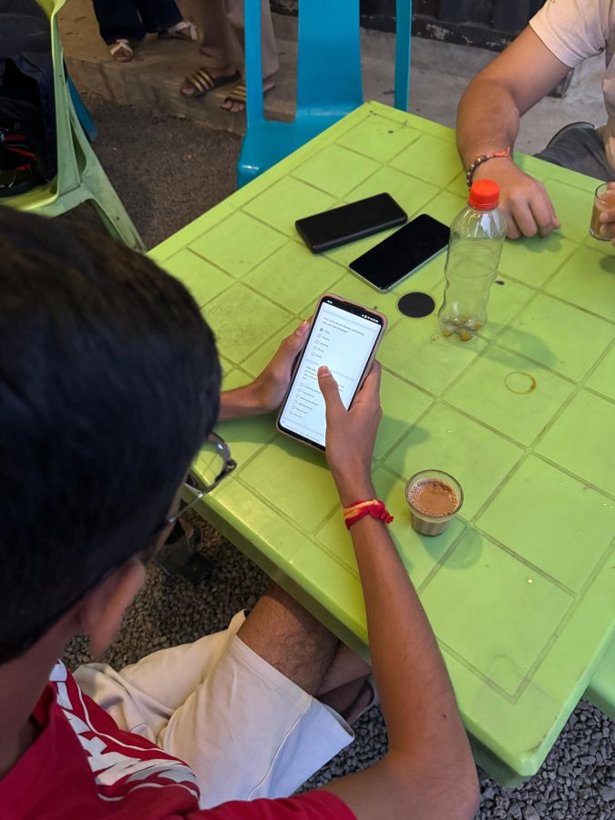
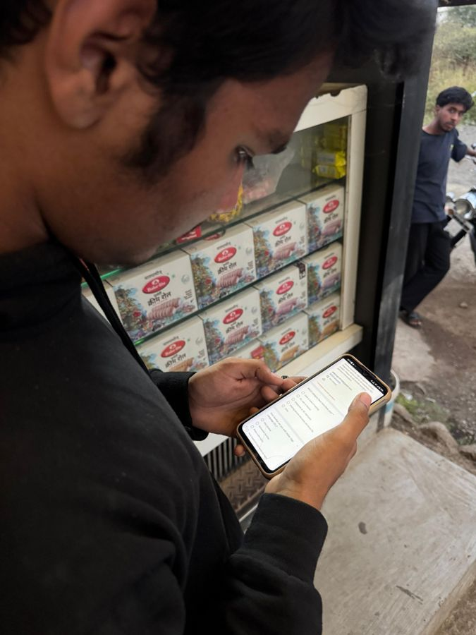
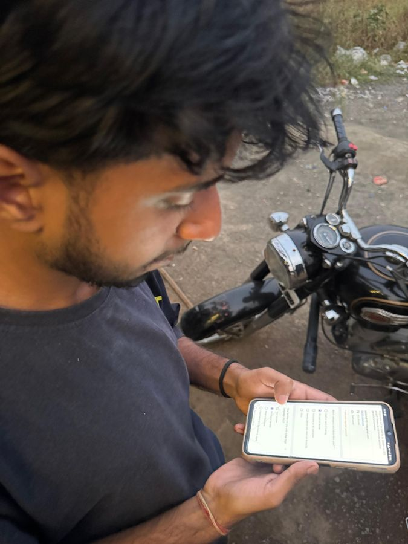
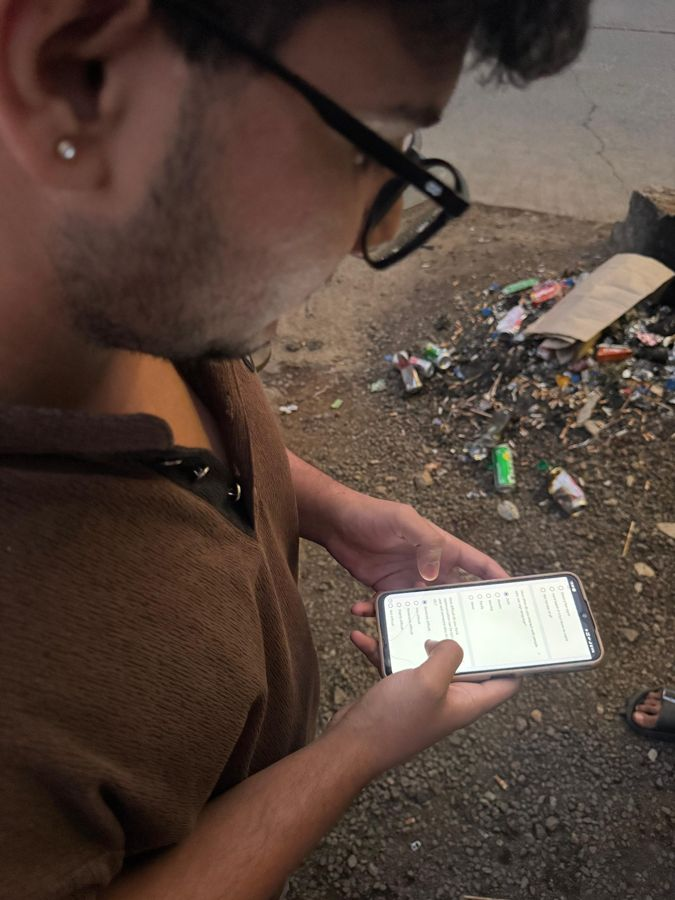
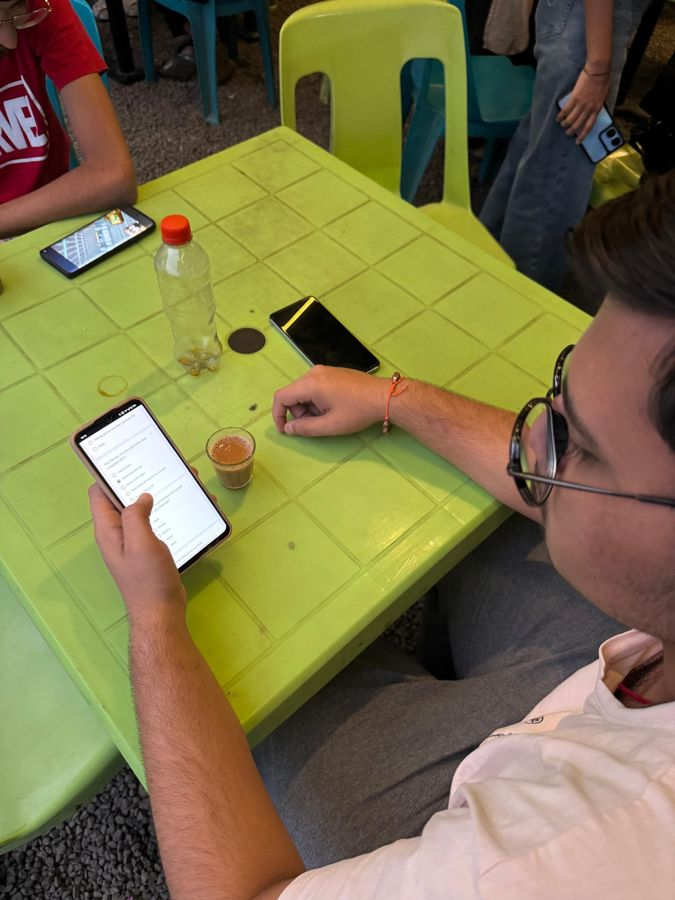
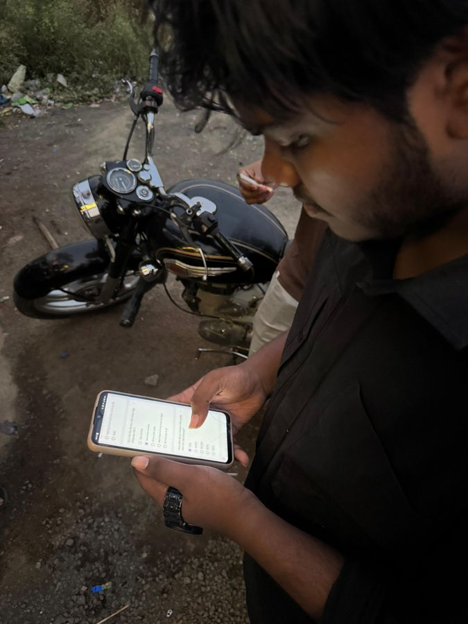
Three personas were built from the survey responses, one for each user group. Each is a composite: the name and age are illustrative, but every goal, need, pain point and behaviour comes from the responses listed under "Based on".
| Persona 1: Meera, 24, Deaf ISL signer | |
|---|---|
| User group | Deaf or hard of hearing; fluent ISL user |
| Goal | Get names, numbers and short words across to hearing people without depending on an interpreter. |
| Needs | High recognition accuracy; clear text on screen; an honest "uncertain" message instead of a wrong word. |
| Pain point | Finds communication extremely difficult; existing apps are not reliable enough, so she rates their usefulness low. |
| Behaviour | Talks with hearing people daily; already uses sign language apps regularly; would very likely use a tool that works reliably. |
| Usage context | Phone or laptop at a counter, office or college. |
| Based on | R09, R08; findings F1, F5, F7, F8 |
| Persona 2: Rohit, 21, hearing classmate who does not know ISL | |
|---|---|
| User group | Hearing person who does not know ISL |
| Goal | Understand a signing classmate or customer quickly during short conversations. |
| Needs | Both text and speech; real-time results; a way to correct wrong predictions; when unsure, ask to repeat the sign. |
| Pain point | Knows no or very few signs and thinks communication is very or extremely difficult; has never used a recognition app. |
| Behaviour | Meets signers monthly or rarely; likely to use the app if it is reliable. |
| Usage context | Laptop or phone in class or at work; quick, one-off interactions. |
| Based on | R05, R07, R10, R01; findings F1, F2, F3, F4, F5, F6 |
| Persona 3: Sana, 20, ISL learner | |
|---|---|
| User group | ISL user or learner, still at an early stage |
| Goal | Practise signs and be understood while she is still learning. |
| Needs | Speech output; a simple, accessible interface; privacy and control over the camera; a way to type the message when the sign is not recognised. |
| Pain point | Unsure about hand shapes; has tried a similar tool before but is not sure she would keep using one. |
| Behaviour | Meets signers monthly; rates the idea 3–4 out of 5. |
| Usage context | At home or in class on a laptop. |
| Based on | R02, R04, R06; findings F2, F4, F5, F6, F7 |
Six sources were reviewed. Two cover sign language recognition as a field, two are specific to Indian Sign Language, one describes the hand-tracking method used here and one covers interface design principles. Section 6.1 compares them and Section 6.2 gives the insights for this project.
| Paper | Approach | Key findings | Limitations | Relevance to this project |
|---|---|---|---|---|
| [1] Bragg et al. (2019), Sign Language Recognition, Generation, and Translation: An Interdisciplinary Perspective, ASSETS '19 | Report of a workshop of vision, linguistics, Deaf-culture and HCI experts; reviews the state of the art | Progress is held back by small datasets, little Deaf involvement and little attention to how output reaches users; calls for interdisciplinary, user-centred work | Position paper with no new system or measurements; mainly about ASL | Motivates designing confirmation, correction and uncertainty into the interface (gap 1) |
| [2] Adeyanju, Bello and Adegboye (2021), Machine learning methods for sign language recognition: A critical review and analysis, Intelligent Systems with Applications | Bibliometric and technical review of 649 Scopus publications on vision-based recognition | Feature extraction followed by an ML classifier is the dominant approach; reliable recognition is "still an open problem" | Scopus only; compares methods, not user experience | Supports the landmark-features plus classifier design for static signs |
| [3] Sridhar et al. (2020), INCLUDE: A Large Scale Dataset for Indian Sign Language Recognition, ACM Multimedia | 4,287 videos of 263 ISL word signs by Deaf students; pose keypoints with deep models | 94.5% accuracy on INCLUDE-50 and 85.6% on all 263 words | Word signs need video and motion models; recorded in one school | Shows the next step after static signs and why this project limits itself to fingerspelling (gap 3) |
| [4] Velmathi G and Goyal (2023), Indian Sign Language Recognition Using Mediapipe Holistic, arXiv | MediaPipe Holistic keypoints with CNN and LSTM models | CNN better for static ISL letters; LSTM better for gesture-based phrases | Preprint; no interface or user evaluation | Supports MediaPipe keypoints for static ISL letters |
| [5] Zhang et al. (2020), MediaPipe Hands: On-device Real-time Hand Tracking, arXiv / CVPR 2020 workshop | Palm detector plus hand-landmark model predicting 21 keypoints from one RGB camera | Real-time on mobile devices with high prediction quality | Harder with overlapping hands, blur and poor light | The landmark extractor used in training and in the browser; enables on-device privacy |
| [6] Shneiderman et al. (2016), Designing the User Interface, 6th ed. | Design principles, including the Eight Golden Rules | Consistency, shortcuts, feedback, closure, error prevention, reversal, user control and low memory load improve usability | Expert guidelines; must be checked with users | Used to design and review every screen (Section 12.7) |
The recognition papers [2], [3], [4] measure success by accuracy. Word-level ISL recognition [3] needs video models and large recorded datasets. Static letters can be recognised from one frame of hand keypoints [4], [5], which is light enough to run in a browser. Paper [1] points out what the accuracy-focused work leaves out: how users see, trust and fix the output, and the fact that datasets come from few signers, so real-world accuracy is lower than reported. This project therefore pairs a lightweight landmark classifier with an interface built around confidence, uncertainty and correction, designed with the rules in [6].
Each gap below is supported by the literature in Section 6 and by the user evidence in Section 4.4.
| No. | Research gap | Literature evidence | User evidence | How this project responds |
|---|---|---|---|---|
| 1 | Recognition systems report accuracy, but not how results are shown to users or how wrong results are handled | [2], [3], [4] judge success by accuracy; [1] calls for user-centred design | F3, F5: correction is the top feature; nobody wants a silent guess | Large result with reference photo, confidence and top-3; uncertain state below 60%; Confirm / Incorrect with correction; Undo |
| 2 | Recognition usually needs servers or heavy models, which raises privacy and connectivity barriers | [5] shows on-device hand tracking is possible; [3] uses heavy video models | F4: privacy and camera control, real-time results | Everything runs in the browser (WebAssembly + 0.46 MB MLP); no frames are uploaded or stored |
| 3 | Word-level ISL needs motion models and large video datasets, which are not yet practical in a browser | [3] word signs need video; [4] static signs work from single frames | F1, F6: frequent contact, little prior tool use; learners need practice | Scope limited to static fingerspelling A–Z, 1–9, which covers names, numbers and spellings; word signs are future work |
| 4 | Reported accuracy is optimistic because datasets come from few signers in controlled settings | [1] dataset limitations; frame leakage in random splits (Section 10) | F7, F8: usefulness only 3.0/5; the fluent signer wants accuracy | Blocked train/test split; leaky random-split figure reported separately; confidence threshold and correction flow in the UI |
The requirements below follow from the findings in Section 4.4. The last column names the finding each requirement responds to.
| No. | Functional requirement | Source |
|---|---|---|
| 1 | Start and stop the camera only when the user asks; handle denied, missing and busy cameras with a clear message. | F4 |
| 2 | Detect up to two hands and recognise the 35 static ISL signs A–Z and 1–9 live from the camera. | F1, F6 |
| 3 | Show the recognised sign in large text with a reference photo, the confidence and the next most likely signs. | F2 |
| 4 | When confidence is below 60%, show an uncertain state with the closest guesses instead of a single answer. | F5 |
| 5 | Let the user confirm a result, mark it incorrect with the intended sign, retry, or hear it spoken. | F2, F3 |
| 6 | Save confirmed and corrected results to a searchable, filterable history; allow deleting one or all entries with Undo. | F3 |
| 7 | Show every supported sign with a reference photo and let the user practise a chosen sign. | F6 |
| 8 | When unsure, let the user type the intended message and have it spoken. | F5 |
| 9 | Provide a demo mode that works without a camera. | F6 |
| No. | Area | Non-functional requirement | Source |
|---|---|---|---|
| 1 | Privacy | No camera frame leaves the device; only label, confidence, time and feedback are stored locally. | F4 |
| 2 | Performance | Detection about 12 times per second; a held sign locks in about one second. | F4 |
| 3 | Offline | All models and WebAssembly files are served with the app; no external service is called. | F4 |
| 4 | Accessibility | Keyboard operable, ARIA labels and live regions, large-text and reduced-motion settings, dark mode, colour never the only cue. | F2, F4 |
| 5 | Efficiency | Single-key shortcuts for every frequent action. | F4 |
| 6 | Reproducibility | The model can be retrained from public data with two scripts; the browser maths is checked against scikit-learn. | Project team |
SignBridge is a single-page web application with no server-side code. A static web server delivers the app, the hand-landmark model (7.8 MB), the WebAssembly runtime and the classifier weights (0.46 MB). After that, everything runs on the user's device.
| File | Role |
|---|---|
src/ml/model.ts | Loads MediaPipe and the weights; detects hands in a video frame |
src/ml/classifier.ts | Feature normalisation and MLP forward pass (identical to ml/train.py) |
src/hooks/useSignRecognizer.ts | Detection loop, smoothing, locking, landmark overlay |
src/pages/LiveRecognition.tsx | Main screen: modes, live read-out, result actions, shortcuts |
src/hooks/useShortcuts.ts, src/components/Toast.tsx | Keyboard shortcuts; notifications with Undo |
ml/extract_landmarks.py, ml/train.py | Landmark extraction and model training/evaluation/export |
scripts/parity-check.mjs | Checks browser predictions equal scikit-learn on 20 test rows |
| Item | Detail |
|---|---|
| Source | Indian Sign Language image dataset, Hugging Face Hemg/Indian_sign_language_dataset [7] |
| Images | 42,745 RGB images, 128 × 128 pixels, dark background, real hands |
| Classes | 35: digits 1–9 and letters A–Z (about 1,200 images each) |
| Cleaning | 358 files named "n copy.jpg" (re-saved duplicates) removed → 42,387 images |
| Hands detected | 98.79% of images (lowest: S 82.8%, Q 84.5%, C 93.9%); images without hands were excluded |
| One vs. two hands | Digits and C, I, L, O, V are one-handed; A, D, E, F, K, M, T, W, X, Z are two-handed in over 98% of images |
Each image was upscaled to 256 × 256 and passed to MediaPipe Hand Landmarker (up to two hands). Hands are sorted left to right by their mean x coordinate. All landmarks are centred on their joint mean and divided by the largest distance from it, which removes the effect of hand position and distance from the camera. The 2 × 21 × (x, y) coordinates (zeros for a missing second hand) plus a flag for "two hands" give 85 features. To support left-handed signers and mirrored cameras, every training sample was also added in horizontally mirrored form.
The images are consecutive frames of a few recordings per class, so neighbouring frames are almost identical. A random 80/20 split would put near-copies of test images into training. Instead, for each class the images were ordered by file number and the last 20% were held out (blocked split): 33,496 training images (66,992 with mirroring) and 8,377 test images. For comparison, the same MLP on a random split scores 99.95%, which shows how much a leaky split inflates the result.
| Model | Configuration | Test accuracy | Macro-F1 | Mirrored test acc. | Train time | Inference / sample |
|---|---|---|---|---|---|---|
| kNN | k = 5 | 97.79% | 97.32% | 97.79% | < 0.1 s | 0.206 ms |
| Random Forest | 300 trees | 97.88% | 97.46% | 97.84% | 63.8 s | 0.020 ms |
| SVM | RBF kernel, C = 10 | 97.88% | 97.43% | 97.88% | 3.0 s | 0.290 ms |
| MLP (chosen) | 85-128-64-35, ReLU, Adam, early stopping | 97.86% | 97.42% | 97.86% | 10.7 s | 0.001 ms |
All four models perform within 0.1 percentage points of each other, which shows that the landmark features carry most of the information. The MLP was chosen because its weights are a small JSON file (0.46 MB) and its forward pass is a few lines of TypeScript, with no ML library needed in the browser. The parity check confirms that the browser gives the same top class as scikit-learn on 20 held-out rows (largest probability difference 4.4 × 10-7).
34 of 35 classes have an F1 of 0.99 or higher. The one weakness is digit 9: 172 of its 240 test images were predicted as S (recall 26.7%), which also lowers the precision of S (53.5%). In the held-out recording the hand shape for 9 looks very much like S in landmark space. More varied training images of 9 and S are the clearest next improvement. In the app, the confidence threshold and the "other candidates" line make this kind of confusion visible to the user.
A softmax classifier always assigns one of the 35 classes, often with near-100% probability, even to a hand shape it has never seen. Early live tests showed exactly this: random gestures were labelled as random letters. We therefore added a second check (ml/ood.py). For each class, k-means picks 16 prototype poses from the training features (560 in total). A live pose whose distance to the nearest prototype exceeds a threshold is treated as unknown: its confidence is capped at 30%, so it can never lock, and the user sees "not a sign shape the model knows" with the closest guesses. The threshold is 1.25 × the 95th-percentile distance of the held-out test set (0.70). It keeps 95.6% of real held-out signs, and rejects 99.3% of synthetic non-signs made by combining hands from two different classes and 99.6% of real signs with randomly bent fingers. In addition, if no sign has locked after 3.5 seconds, the app shows the uncertain state with the closest guesses instead of waiting.
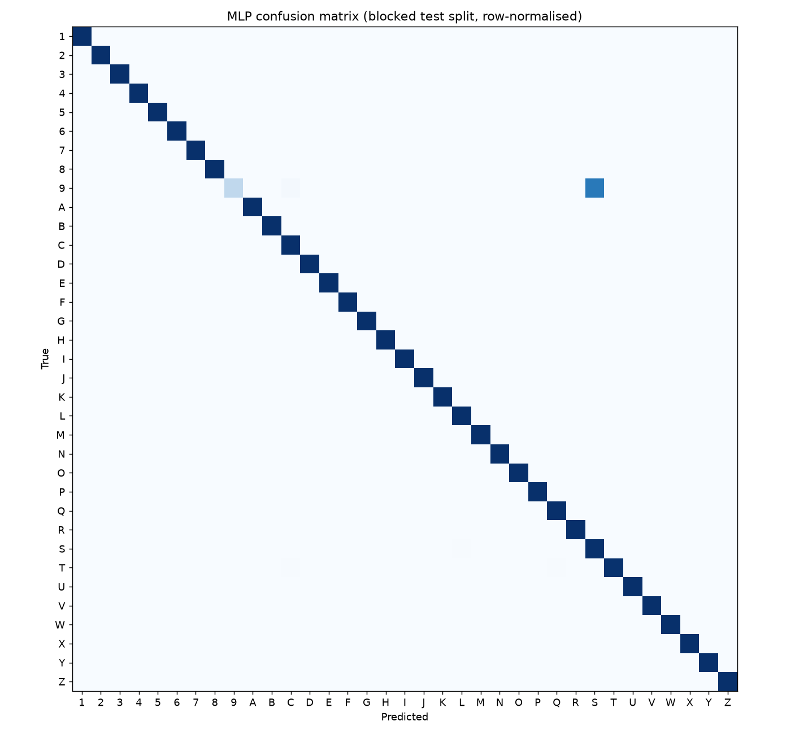
| No. | Use case | Summary | Task | Main users |
|---|---|---|---|---|
| 1 | Recognise a sign | Start the camera, hold a sign, read the result in text and speech | T1 | ISL users, hearing partners |
| 2 | Correct or undo a result | Mark a result incorrect, choose the intended sign, or undo a save | T2 | All |
| 3 | Practise a sign | Pick a sign in Supported Signs, practise it on camera and see if it matches | T3 | Learners |
| 4 | Review history | Search, filter and delete past results | T4 | All |
| 5 | Recover from problems | Camera denied or missing, model not loaded, low confidence | T5 | All |
| Step | Actor / system action |
|---|---|
| 1 | The user opens Live Recognition. The model loads in the background and the badge shows "Model ready". |
| 2 | The user presses Start Recognition (Space). If the camera is off, the browser asks for permission and the camera starts. |
| 3 | The system draws the hand skeleton, shows how many hands are detected and the current guess with a confidence bar. |
| 4 | The user holds the sign still. When 9 of the last 12 frames agree at 60% or more, the system locks the result. |
| 5 | The system shows the sign in large text, a reference photo, the confidence and other candidates. |
| 6 | The user confirms (C), marks it incorrect (X), hears it (S) or tries again (R). A notice confirms the save, with Undo (U). |
Precondition: a camera is available and permission is granted. Alternate flows: camera denied or missing → message with Retry and Demo mode; confidence below 60% on Capture → uncertain state with closest guesses. Postcondition: the result is saved with its feedback, or nothing is saved.
Low-fidelity wireframes were drawn for the five key screens before they were built, so that layout, order of information and interaction could be checked against the user needs from Sections 4 and 5. They are drawn in grey only, so that attention stays on structure rather than colour. Numbered markers link each element to the need it serves, and each wireframe is shown with the matching screen of the working prototype.
| Task | User task | Findings | Screens |
|---|---|---|---|
| T1 | Get one fingerspelled sign recognised and shown as text and speech | F1, F2 | W1, W2, W3 |
| T2 | Notice when the result is uncertain or wrong and fix or undo it | F5, F3 | W3, W5 |
| T3 | Practise a chosen sign against a reference | F6 | W4, W2 |
| T4 | Find, review and delete earlier results | F3 | W5 |
| T5 | Recover from camera or model problems | F4 | W2 |
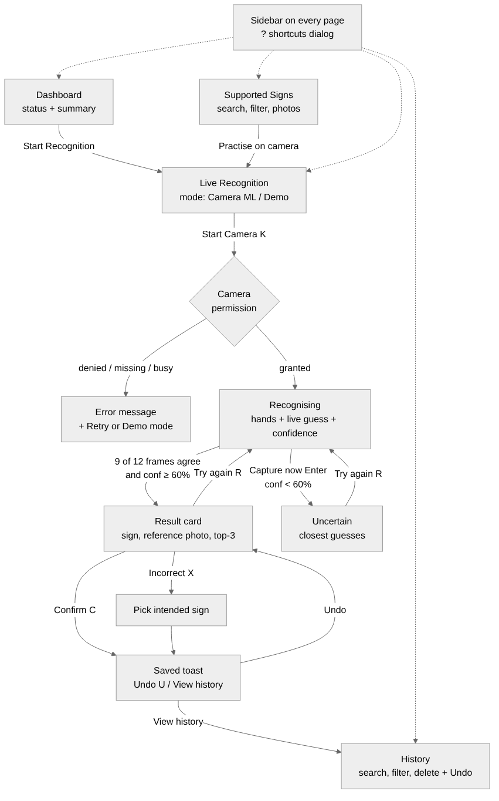
W1 Dashboard
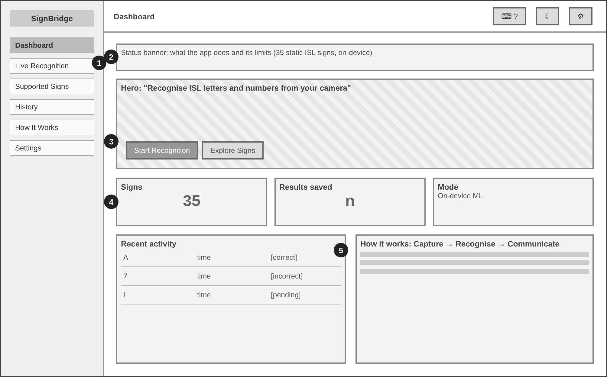
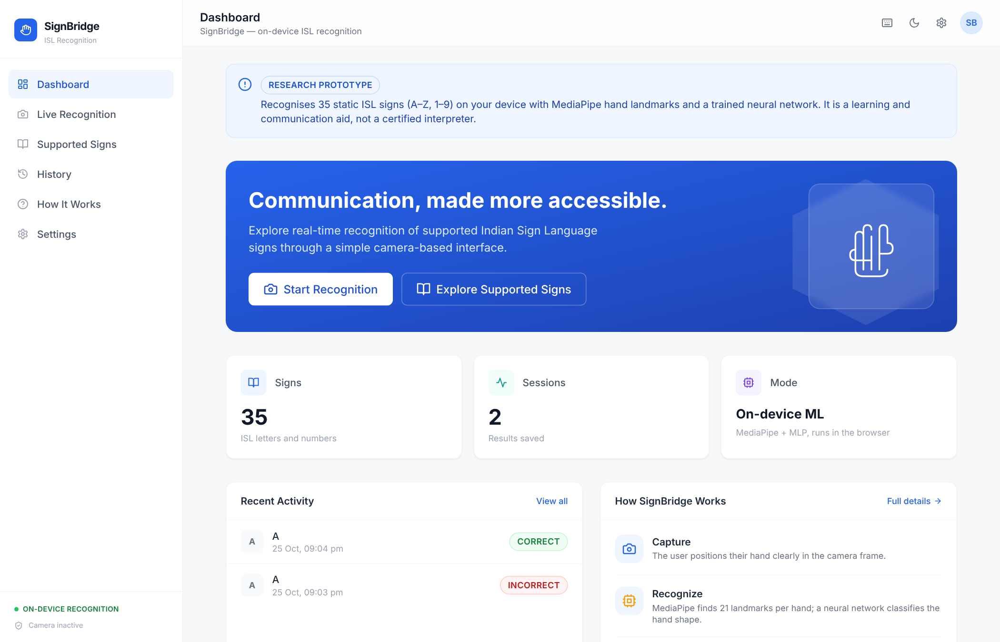
| No. | Element | Why it is there (user need) | Need |
|---|---|---|---|
| 1 | Sidebar navigation | The same six links on every page, so users always know where they are and can go anywhere in one click | F4 |
| 2 | Status banner | Says in plain words what the app can and cannot do (35 static signs, not an interpreter) | F7 |
| 3 | Hero with Start Recognition | One clear entry to the main task T1 | F4 |
| 4 | Summary cards and recent activity | Shows the vocabulary size and recent results without opening History | F3 |
| 5 | How it works | Three-step explanation for first-time users | F6 |
W2 Live Recognition (recognising)
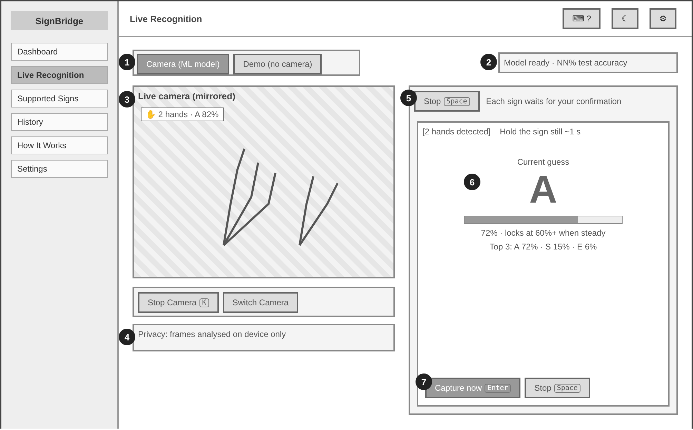
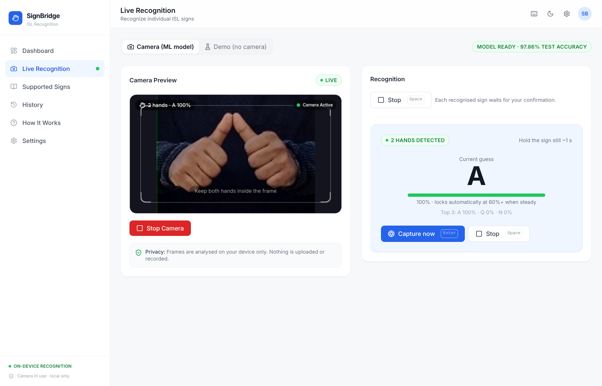
| No. | Element | Why it is there (user need) | Need |
|---|---|---|---|
| 1 | Mode switch: Camera (ML) / Demo | Works with or without a camera | F6 |
| 2 | Model status badge | Shows whether the model is ready and its tested accuracy | F7 |
| 3 | Mirrored camera with hand skeleton and chip | Users see that their hands are found, like a mirror | F2 |
| 4 | Privacy note | States that frames stay on the device | F4 |
| 5 | Start/Stop with key hint | One action that starts and stops recognition; Space shortcut | F4 |
| 6 | Live guess, confidence bar, top 3 | Continuous feedback while the sign is held | F2, F5 |
| 7 | Capture now / Stop | The user decides when to take the result | F3 |
W3 Result, correction and undo
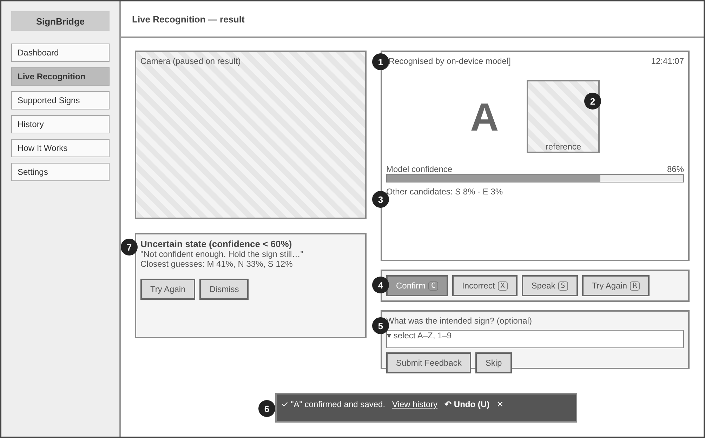
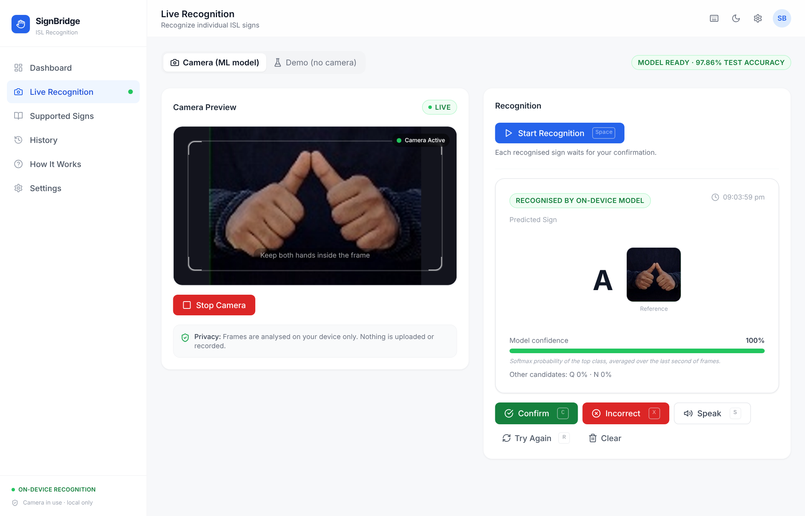
| No. | Element | Why it is there (user need) | Need |
|---|---|---|---|
| 1 | Mode badge and time | Says the result came from the model and when | F7 |
| 2 | Large label and reference photo | Readable from a distance; the photo lets both people check the hand shape | F2 |
| 3 | Confidence and other candidates | Shows how sure the model is and what else it might be | F5 |
| 4 | Confirm / Incorrect / Speak / Try again with key hints | One click or key for each next step; speech for hearing partners | F2, F3 |
| 5 | Correction form | Records the intended sign when the model was wrong | F3 |
| 6 | Saved notice with Undo and View history | Closure plus a way back | F3 |
| 7 | Uncertain state | Below 60% the app does not guess; it shows the closest options | F5 |
W4 Supported Signs
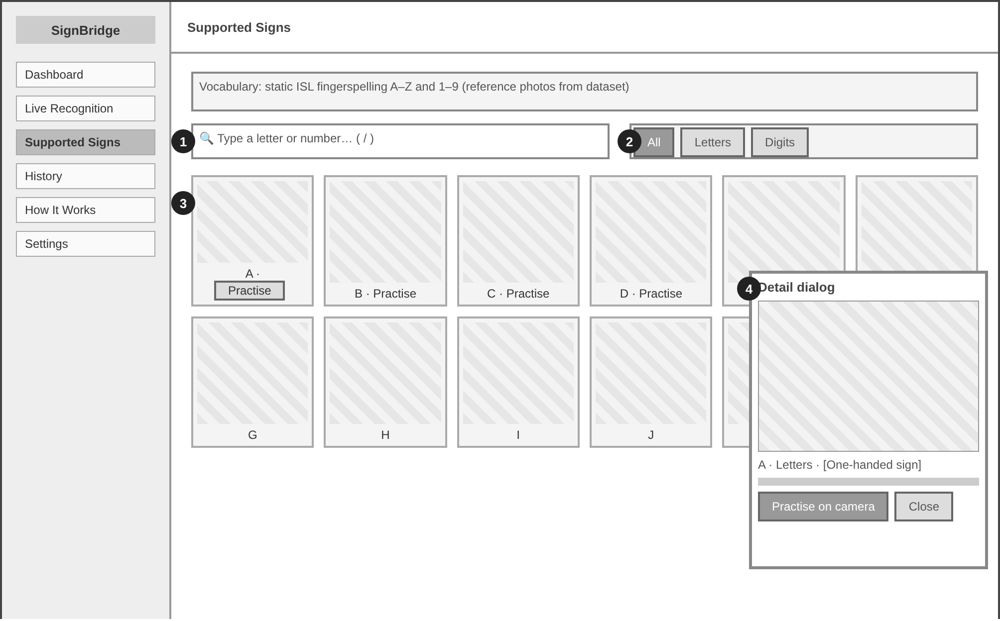
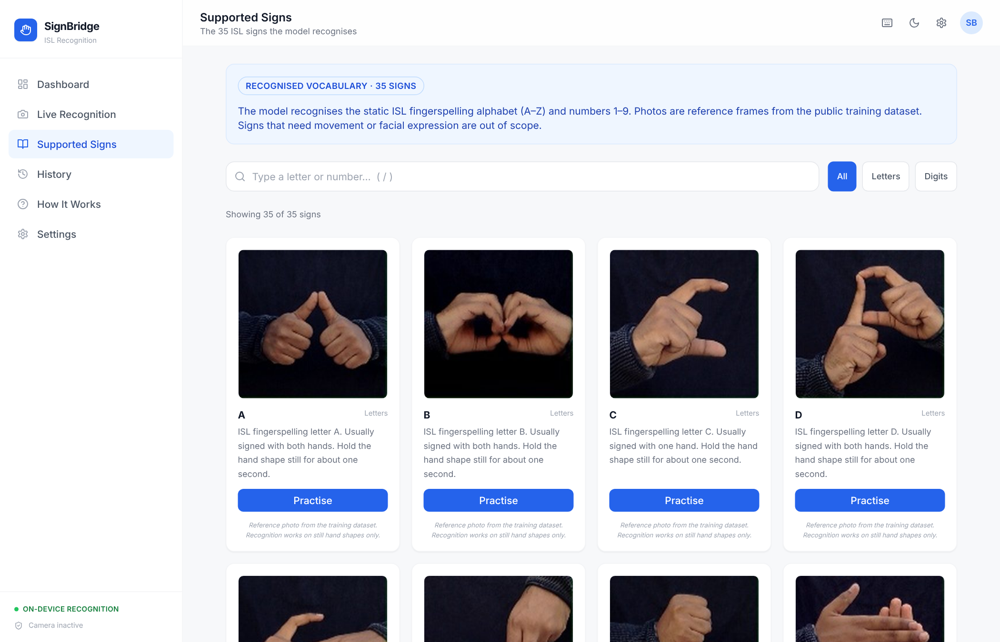
| No. | Element | Why it is there (user need) | Need |
|---|---|---|---|
| 1 | Search by letter or number ( / ) | Find a sign quickly | F6 |
| 2 | Category filter | Letters or digits only | F6 |
| 3 | Cards with reference photos | Recognition rather than recall of hand shapes | F6, F2 |
| 4 | Detail dialog with Practise on camera | One-handed / two-handed note and a direct path to practise (task T3) | F6 |
W5 History
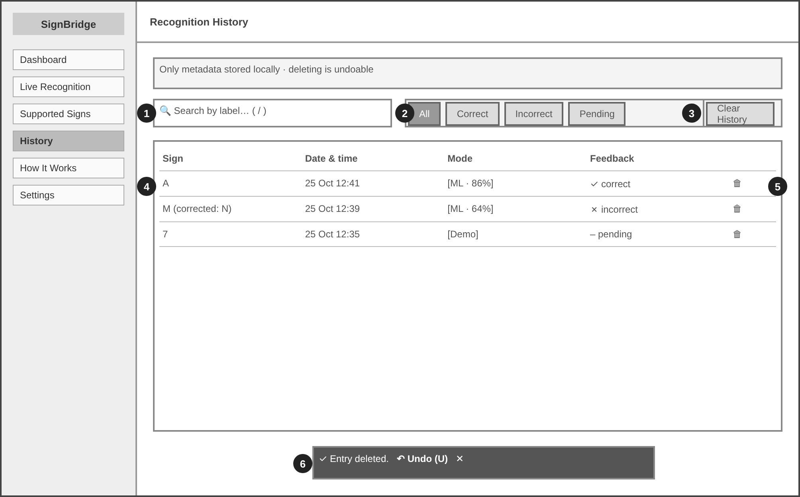
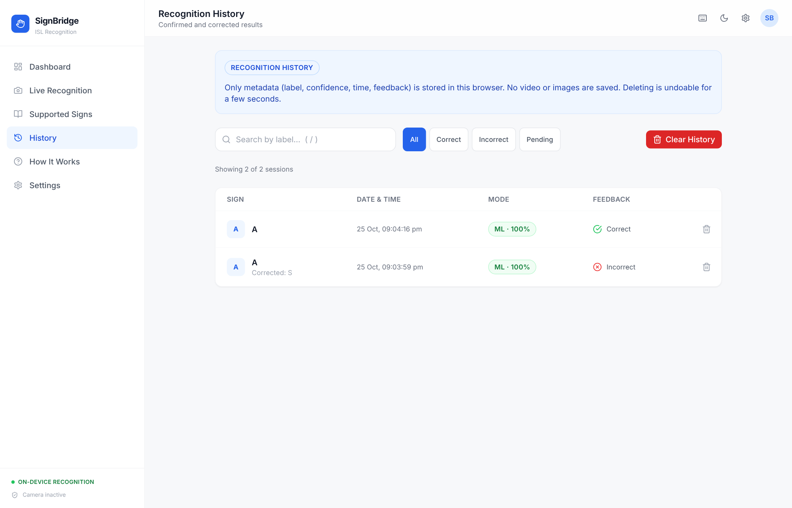
| No. | Element | Why it is there (user need) | Need |
|---|---|---|---|
| 1 | Search ( / ) | Find a past result | F3 |
| 2 | Feedback filter | Show only correct, incorrect or pending results | F3 |
| 3 | Clear History (with confirm and Undo) | Remove everything safely | F3, F4 |
| 4 | Rows with mode, confidence, correction | Review what the model said and what the user corrected | F5 |
| 5 | Per-entry delete | Remove one mistaken entry | F3 |
| 6 | Undo notice | Every delete can be reversed | F3 |
| Heuristic | How it is applied in the design | Where |
|---|---|---|
| Visibility of system status | Model-ready badge, hands-detected badge, skeleton overlay, live confidence, Live camera badge, sidebar camera status | W2, W3 |
| Match with the real world | Mirrored camera; reference photos; plain words ("Hold the sign still ~1 s") | W2, W3, W4 |
| User control and freedom | Stop, Reset, Try again, Undo, Demo mode, auto-save switch | W2, W3, W5 |
| Consistency and standards | Same layout, buttons and colours on every page; one result card for both modes | W1–W5 |
| Error prevention | Confidence threshold, 9-of-12 agreement, confirmation before Clear History | W2, W3, W5 |
| Recognition rather than recall | Reference photos, key hints on buttons, shortcut list (?), correction from a list | W3, W4 |
| Flexibility and efficiency | Single-key shortcuts; Capture now; auto-save mode for continuous spelling | W2, W3 |
| Aesthetic and minimalist design | One main task per screen; secondary actions as ghost buttons | W1–W5 |
| Help users recover from errors | Specific camera error messages with Retry; model error offers Demo mode; uncertain state with tips | W2, W3 |
| Help and documentation | How It Works page, shortcut dialog, inline tips | All |
| No. | Golden rule | How it is applied in the design | Where | Need |
|---|---|---|---|---|
| 1 | Strive for consistency | Same sidebar, header, card layout and button styles on every page. Green always means confident or confirmed, amber uncertain, red error. Demo and camera modes share one result card. Shortcut letters match the action names (C confirm, S speak, R retry). | W1–W5 | F4 |
| 2 | Enable frequent users to use shortcuts | Single-key shortcuts: Space start/stop, Enter capture, C confirm, X incorrect, S speak, R retry, K camera, U undo, / search, ? list. Key hints are printed on the buttons, shortcuts can be turned off in Settings, and they never fire while typing. "Practise" jumps from a sign straight to the camera. | W2, W3, W4, W5 | F4 |
| 3 | Offer informative feedback | Model-ready badge with accuracy; hand skeleton drawn on the video; "2 hands detected"; live guess with confidence bar and top 3; notice after every save. | W2, W3 | F2, F5 |
| 4 | Design dialogs to yield closure | Recognition ends in a locked result card. Confirm or Incorrect ends the task with "'A' confirmed and saved" and a View history link. | W3, W5 | F3 |
| 5 | Offer error prevention and simple error handling | A sign locks only after 9 of 12 frames agree. Below 60% confidence the app shows an uncertain state with the closest guesses instead of a wrong answer. Clear camera messages for denied, missing and busy cameras. If the model fails to load, Demo mode is offered. Clear History asks first. | W2, W3, W5 | F5 |
| 6 | Permit easy reversal of actions | Undo (button or U) after confirming, marking incorrect, deleting one entry and clearing all history. Undo after a save also puts the result back on screen. Stop, Reset and Try again are always visible. | W3, W5 | F3 |
| 7 | Support internal locus of control | The camera starts only on request and recognition only on command. Capture now lets the user decide when to lock. The user chooses manual confirm or auto-save in Settings. Nothing leaves the device. | W2, W3, Settings | F3, F4 |
| 8 | Reduce short-term memory load | Reference photo next to the result, so the user does not have to remember the hand shape; Supported Signs with photos; ? lists every shortcut; key hints on buttons; recent results on the Dashboard. | W1, W3, W4 | F6, F2 |
The prototype is a working web application, not a mock-up: it uses the real camera and the trained model. To run it, install Node.js 18 or newer, run npm install and npm run dev in the project folder, and open http://localhost:5173 in Chrome, Edge or Safari. A production build (npm run build) can be served from any static web host.
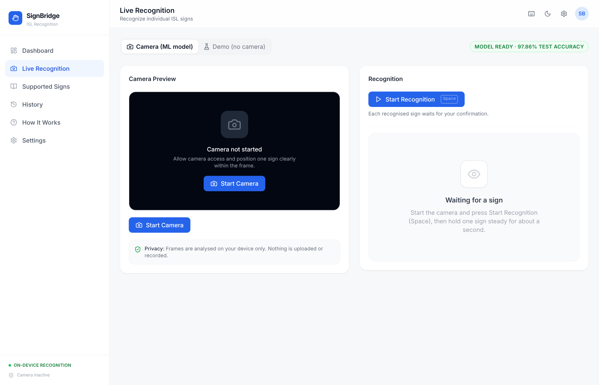
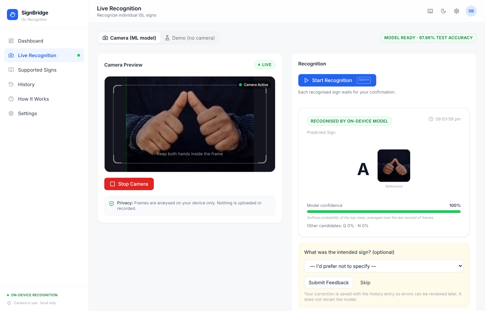
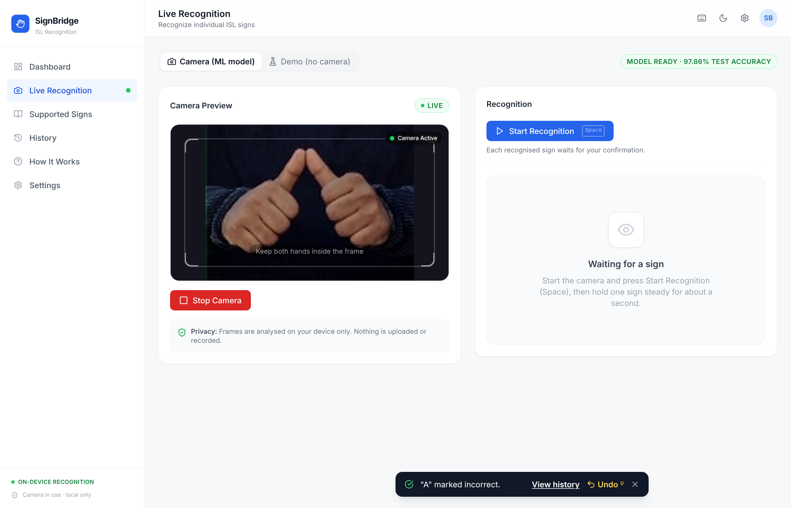
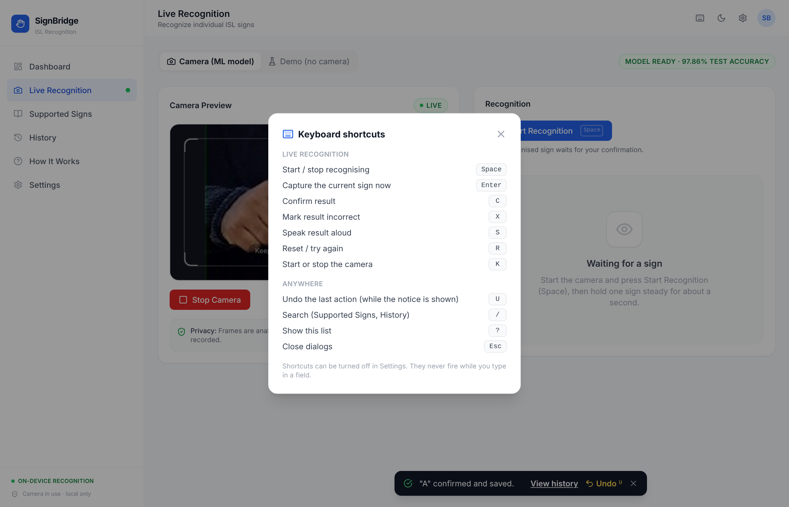
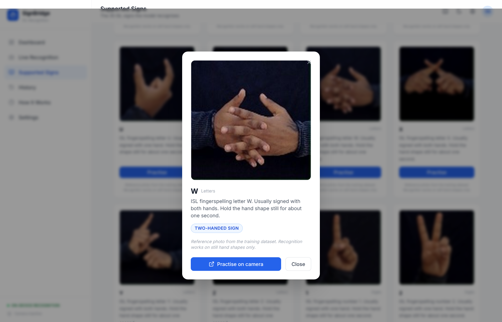
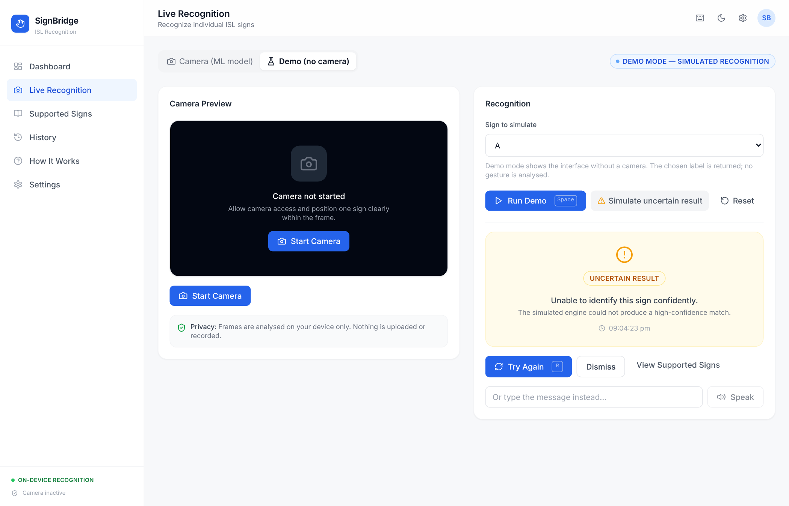
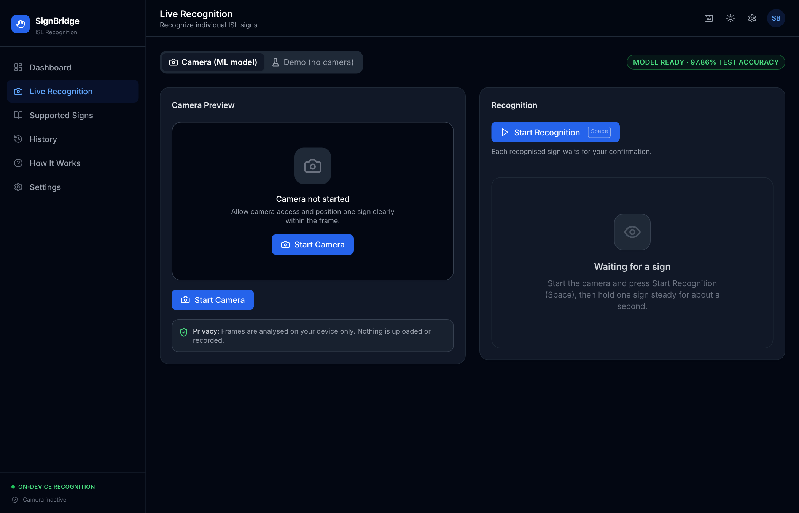
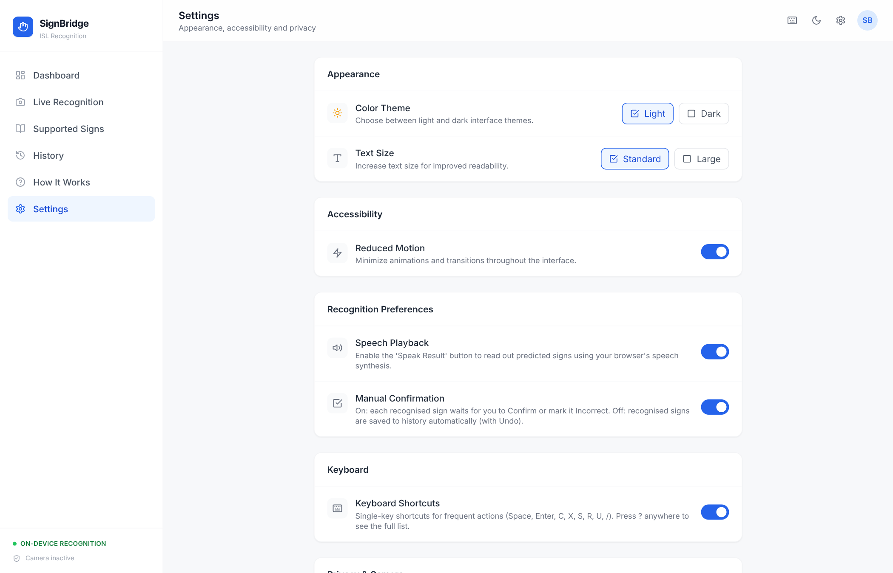
| Component | Role |
|---|---|
| React 18, TypeScript, Vite | Single-page application and build |
| Tailwind CSS, lucide-react | Custom styling and icons (no prebuilt UI kit) |
| MediaPipe Tasks Vision (WebAssembly) | Hand landmark detection in the browser |
| scikit-learn, NumPy, MediaPipe (Python) | Landmark extraction, training, evaluation and export |
| Web Speech API | Speaking the result aloud |
| localStorage | Preferences and history (metadata only) |
| Playwright | Automated end-to-end test and screenshots with a fake camera |
The research poster (A1 portrait) summarises the problem, user groups, method, personas, findings, literature insights, research gaps, system, ML results, prototype screens and the Eight Golden Rules. The full-resolution file is docs/poster/SignBridge_A1_Poster.pdf.
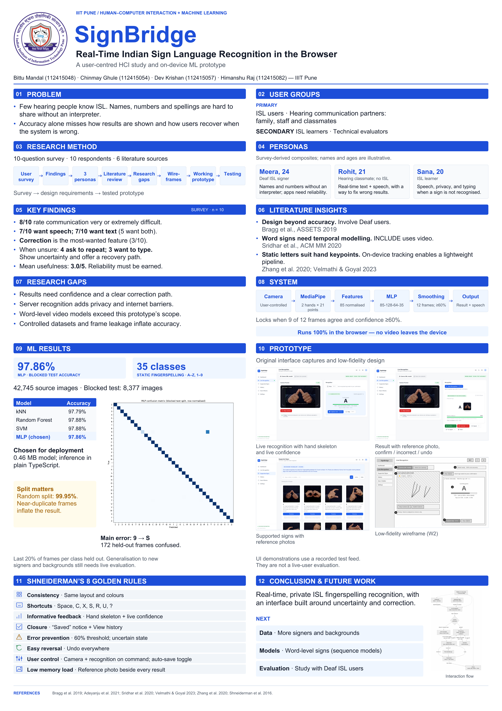
On the blocked held-out split (8,377 images, 35 classes) the MLP reached 97.86% accuracy and 97.42% macro-F1, and the same score on mirrored test images (Section 10). The main error is 9 predicted as S.
| No. | Test | Expected result | Result |
|---|---|---|---|
| 1 | TypeScript type check and production build | No errors | Pass |
| 2 | Parity check: browser MLP vs. scikit-learn on 20 held-out rows | Same top class | Pass (20/20, max difference 4.4 × 10-7) |
| 3 | Automated browser test with a fake camera showing a held-out "L" image: Space → result → C → U | "L" recognised, saved, then removed by Undo | Pass |
| 4 | Two-hand sign "A" from a held-out image | Two hands detected, skeleton drawn, "A" locked | Pass |
| 4b | Non-sign pose (held-out "L" rotated 90°) | Marked unknown, uncertain state with closest guesses, no wrong label | Pass |
| 5 | Camera permission denied / no camera | Clear message with Retry; Demo mode still usable | Pass |
| 6 | Shortcuts while typing in the search field | No shortcut fires | Pass |
| 7 | Delete one history entry, then Undo | Entry restored | Pass |
| 8 | Responsive layout at 390 px width; dark mode | Usable layout, readable contrast | Pass |
SignBridge shows that static ISL fingerspelling can be recognised in real time entirely inside a web browser. It combines MediaPipe hand landmarks with a small neural network that reaches 97.86% accuracy on held-out data. The HCI work produced an interface that treats the model as fallible: it shows confidence and alternatives, refuses to guess below a threshold, and makes every action reversible. All eight of Shneiderman's Golden Rules are implemented and mapped to specific screens.
Limitations. The user survey is small (10 respondents, a convenience sample, mostly hearing people) and some self-reported group labels are inconsistent with the stated ISL familiarity, so the findings guide the design but are not statistically representative. The dataset contains few signers against one dark background, so accuracy on new people, skin tones, lighting and backgrounds is expected to be lower. Digit 9 is often confused with S. Only static signs are covered.
Future scope.
[1] D. Bragg, O. Koller, M. Bellard, L. Berke, P. Boudreault, A. Braffort, N. Caselli, M. Huenerfauth, H. Kacorri, T. Verhoef, C. Vogler and M. R. Morris, "Sign Language Recognition, Generation, and Translation: An Interdisciplinary Perspective," in Proc. ASSETS '19, 2019, pp. 16–31. doi:10.1145/3308561.3353774.
[2] I. A. Adeyanju, O. O. Bello and M. A. Adegboye, "Machine learning methods for sign language recognition: A critical review and analysis," Intelligent Systems with Applications, vol. 12, 200056, 2021. doi:10.1016/j.iswa.2021.200056.
[3] A. Sridhar, R. G. Ganesan, P. Kumar and M. Khapra, "INCLUDE: A Large Scale Dataset for Indian Sign Language Recognition," in Proc. 28th ACM Int. Conf. on Multimedia, 2020. doi:10.1145/3394171.3413528.
[4] G. Velmathi and K. Goyal, "Indian Sign Language Recognition Using Mediapipe Holistic," arXiv:2304.10256, 2023.
[5] F. Zhang, V. Bazarevsky, A. Vakunov, A. Tkachenka, G. Sung, C.-L. Chang and M. Grundmann, "MediaPipe Hands: On-device Real-time Hand Tracking," arXiv:2006.10214, 2020.
[6] B. Shneiderman, C. Plaisant, M. Cohen, S. Jacobs, N. Elmqvist and N. Diakopoulos, Designing the User Interface: Strategies for Effective Human-Computer Interaction, 6th ed. Pearson, 2016.
[7] Indian_sign_language_dataset (Hemg), Hugging Face, 42,745 images, 35 classes. https://huggingface.co/datasets/Hemg/Indian_sign_language_dataset